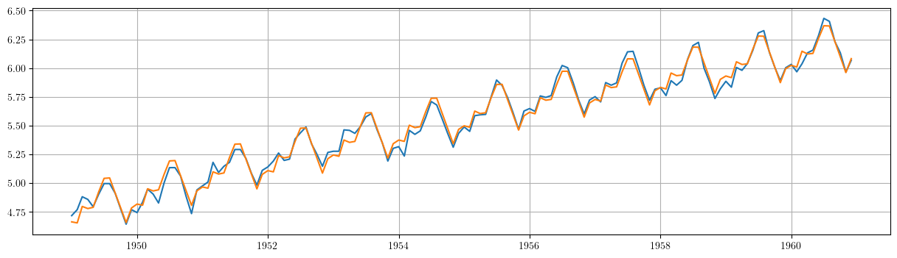

Econometría Aplicada. Lección 2
Table of Contents
En esta lección veremos algunos modelos de regresión con series temporales; en particular la estimación de componentes (no observables) con modelos deterministas. También los efectos de la autocorrelación en las perturbaciones y como lidiar con ellos.
Carga de algunos módulos de python
# Importamos algunos módulos de python import numpy as np # linear algebra import pandas as pd # dataframe processing import statsmodels.api as sm # modelos estadísticos import matplotlib as mpl import matplotlib.pyplot as plt # data visualization # definimos parámetros para mejorar los gráficos mpl.rc('text', usetex=True) mpl.rc('text.latex', preamble=r'\usepackage{amsmath}') from matplotlib import rcParams rcParams['figure.figsize'] = 15,5
# Usaré la siguiente función para transformar salidas en \LaTeX{} de statsmodels a ficheros png # que incluiré en las transparencias from sympy.printing.preview import preview def repr_png(tex, ImgFile): preamble = "\\documentclass[10pt,preview]{standalone}\n" \ "\\usepackage{booktabs,amsmath,amsfonts}\\begin{document}" preview(tex, filename=ImgFile, viewer='file', preamble=preamble, dvioptions=['-D','250'])
- Lectura datos: Internat. airline passengers. Monthly totals in thousands. Jan 49 – Dec 60
# Leemos los datos de un fichero csv y generamos un dataframe de pandas cuyo índice es el tiempo OrigData = pd.read_csv('./database/Datasets-master/airline-passengers.csv') OrigData['Month'] = pd.to_datetime(OrigData['Month']) OrigData = OrigData.set_index(['Month']) print(OrigData.head())
# Creamos un dataframe con el mismo índice temporal de los datos originales pero con los datos en logaritmos TransformedData = pd.DataFrame(index=OrigData.index) TransformedData['dataLog'] = np.log(OrigData['Passengers']) print(TransformedData.head())
1. Descomposición estructural de una serie temporal
En la lección anterior vimos que una estrategia para analizar series temporales es transformar los datos para
- primero lograr que sean "estacionarios" y
- después, mediante más transformaciones, lograr una secuencia de "ruido blanco" (este segundo paso aún no lo hemos abordado)
(recuerde que las expresiones "datos estacionarios" o secuencia de "ruido blanco" son un abuso del lenguaje).
Pero existe otro enfoque que pretende descomponer la serie temporal en los siguientes componentes "no observables" (o en un subconjunto de ellos):
\[\boldsymbol{y} = \boldsymbol{t} + \boldsymbol{c} + \boldsymbol{s} + \boldsymbol{e}\]
donde:
- La tendencia "\(\boldsymbol{t}\)"
- recoge la lenta evolución de la media a largo plazo.
- El componente estacional "\(\boldsymbol{s}\)"
- recoge las oscilaciones periódicas que se repiten regularmente en ciclos estacionales (de año en año, o de semana en semana, etc.).
- El componente cíclico "\(\boldsymbol{c}\)"
- Cuando aparece explícitamente en el modelo, \(\boldsymbol{c}\) recoge las oscilaciones a medio plazo. Es decir, aquellas de un plazo más largo que las oscilaciones estacionales, pero más corto que la tendencia de largo plazo. Si está ausente, dichas oscilaciones suelen aparecer en el componente de la tendencia, que entonces también podemos denominar tendencia-ciclo.
- El componente irregular "\(\boldsymbol{e}\)"
- recoge las oscilaciones no captadas por el resto de componentes, ya que debe cumplir la siguiente identidad: \(\boldsymbol{e} = \boldsymbol{y} - \boldsymbol{t} - \boldsymbol{c} - \boldsymbol{s}\).
Ajuste aceptable si (como poco) el componente irregular \(\boldsymbol{e}\) parece "estacionario".
1.1. Tendencia determinista lineal
# Ajustamos por MCO una tendencia linea. # Para ello, primero creamos un DataFrame con el regresando y los regresores del modelo datosModelo1 = TransformedData[['dataLog']].copy() nsample = len(datosModelo1) datosModelo1['cte'] = [1]*nsample datosModelo1['time'] = np.linspace(1, nsample, nsample) model1 = sm.OLS(datosModelo1['dataLog'], datosModelo1[['cte', 'time']]) results1 = model1.fit()
#Añadimos al DataFrame =datosModelo1= la tendencia ajustada, los residuos y la diferencia estacional de los residuos. datosModelo1['yhat'] = datosModelo1['cte']*results1.params['cte']+datosModelo1['time']*results1.params['time'] datosModelo1['ehat'] = results1.resid datosModelo1['ehatDiff12'] = datosModelo1['ehat'].diff(12)
# Dibujamos los datos junto a la tendencia estimada plt.plot(datosModelo1['dataLog']) plt.plot(results1.fittedvalues) plt.grid() plt.ylabel(r"Log-Passengers, ($\ln\boldsymbol{x}$) ")
El modelo de tendencia más simple es la recta de regresión (el regresor no constante es el índice \(t\)):
\[\ln{y_t}=\underbrace{\beta_1+\beta_2\cdot t}_{\text{tendencia}} + e_t; \quad t=1:114\]

\[\widehat{\ln{y_t}}=4.8137+0.01\cdot\big(t\big), \qquad t=1:114\]
print(results1.summary())

Componente irregular
# Gráfico de los residuos del ajuste. plt.grid() plt.plot(results1.resid)
En este caso, el modelo
\[\boldsymbol{y} = \boldsymbol{t} + \boldsymbol{e}\]
donde \(\boldsymbol{t}\) es una tendencia lineal no es un ajuste satisfactorio, pues el componente irregular \[\boldsymbol{e}=\boldsymbol{y}-\boldsymbol{t}\] no tiene la apariencia de realización de un proceso estacionario.
# Gráfico de la diferencia estacional de los residuos del ajuste. plt.grid() plt.plot(datosModelo1['ehatDiff12'])
Adicionalmente podemos ver que diferencia de orden 12 del componente irregular parece mostrar un componente cíclico con un periodo de unos 4 años.
En el siguiente ejercicio probaremos con una tendencia cuadrática…
1.2. Tendencia determinista cuadrática
# creamos un DataFrame con el regresando y los regresores del modelo :results silent. datosModelo2 = TransformedData[['dataLog']].copy() nsample = len(datosModelo1) datosModelo2['cte'] = [1]*nsample datosModelo2['time'] = np.linspace(1, nsample, nsample) datosModelo2['sq_time'] = [t**2 for t in datosModelo2['time']] # Ajustamos por MCO una tendencia cuadrática a los datos. model2 = sm.OLS(datosModelo1['dataLog'], datosModelo2[['cte', 'time', 'sq_time']]) results2 = model2.fit()
# Añadimos al DataFrame 'datosModelo2' la tendencia ajustada, los residuos y la diferencia estacional de los residuos. datosModelo2['yhat'] = results2.fittedvalues datosModelo2['ehat'] = results2.resid datosModelo2['ehatDiff12'] = datosModelo2['ehat'].diff(12)
# Dibujamos los datos junto a la tendencia estimada. plt.plot(datosModelo1['dataLog']) plt.plot(results2.fittedvalues) plt.grid() plt.ylabel(r"Log-Passengers, ($\ln\boldsymbol{x}$) ")
\[\ln{y_t}=\underbrace{\beta_1+\beta_2\cdot t + \beta_3\cdot t^2}_{\text{tendencia}} + e_t; \quad t=1:114\]

\[\widehat{\ln{y_t}}=4.7364+(0.0132)\cdot t +(-2.191e-05)\cdot t^2, \qquad t=1:114\]
print(results2.summary())

Componente irregular
plt.grid() plt.plot(results2.resid)

De manera análoga al caso anterior, el modelo
\[\boldsymbol{y} = \boldsymbol{t} + \boldsymbol{e}\]
donde \(\boldsymbol{t}\) ahora es una tendencia cuadrática tampoco es un ajuste satisfactorio, pues el componente irregular \(\boldsymbol{e}\) sigue sin parecerse a la realización de un proceso estacionario.
plt.grid()
plt.plot(datosModelo2['ehatDiff12'])
También en este modelo la diferencia de orden 12 del componente irregular muestra un componente cíclico con un periodo de unos 4 años.
Para obtener una tendencia-ciclo que capte este ciclo, son necesarios procedimientos más sofisticados (por ejemplo TRAMO-SEATS, o X13-ARIMA, o STAMP, o LDHR, o E4, etc.) que estiman tendencias y componentes estacionales estocásticos.
En el siguiente ejercicio estimaremos un componente estacional determinista (junto a una tendencia cuadrática determinista).
1.3. Tendencia cuadrática más estacionalidad determinista mediante dummies
# Creamos un dataframe con los datos y los regresores 'cte', 't' y ' :results silentt^2' df = TransformedData[['dataLog']].copy() nsample = len(df) df['cte'] = [1]*nsample df['time'] = np.linspace(1, nsample, nsample) df['sq_time'] = [t**2 for t in df['time']]
# Creamos las /dummies/ estacionales from statsmodels.tsa.deterministic import Seasonality seas_gen = Seasonality(12, initial_period=1) seasonalDummies = seas_gen.in_sample(df.index)
# Creamos un dataframe con el regresando y todos los regresores del modelo datosModelo3 = pd.concat([df, seasonalDummies],axis=1) # realizamos la regresión de la primera columna ('dataLog') sobre el resto de columnas del dataframe. model3 = sm.OLS(datosModelo3['dataLog'], datosModelo3.iloc[:,1:-1]) results3 = model3.fit()
# La combinación lineal de los regresores 'cte', 'time' y 'sq_time' usando los correspondientes # parámetros estimados nos da el componente de tendencia (determinista) estimado. TrendComp = datosModelo3[['cte','time','sq_time']].dot(results3.params[['cte','time','sq_time']])
rcParams['figure.figsize'] = 15,4 plt.plot(datosModelo1['dataLog']) plt.plot(TrendComp) plt.grid() plt.ylabel(r"Log-Passengers, ($\ln\boldsymbol{x}$) ")

SeasonalComp = (seasonalDummies.iloc[:,:-1]).dot(results3.params[3:])
plt.grid()
plt.plot(SeasonalComp)

1.3.1. Ajuste y componente irregular \(\boldsymbol{e}=\boldsymbol{y}-\boldsymbol{t}-\boldsymbol{s}\)
plt.grid()
plt.plot(datosModelo3['dataLog'])
plt.plot(TrendComp + SeasonalComp)

plt.grid() plt.plot(results3.resid)

1.3.2. Valoración de modelos con componentes deterministas
- Estos modelos resultan útiles para realizar un análisis descriptivo.
- Pero suelen funcionar bastante mal como herramienta de predicción:
- no tienen en cuenta la dependencia inter-temporal de los datos (se han estimado mediante una regresión como si los datos hubieran sido de sección cruzada)
- Por ejemplo, a la hora de prever el dato de enero de 1961, en este modelo pesa tanto el dato de enero de 1949 como el dato de enero de 1960.
En general, para que los modelos funcionen bien en predicción deben dar un mayor peso a los datos recientes frente a los datos alejados en el tiempo.
Pero sigamos explorando este modelo…
Hay parámetros no significativos… (p-valores para dummies enero, febrero y octubre).
repr_png(results3.summary().as_latex(), "./img/lecc02/resultsModel3.png")
podemos eliminarlos secuencialmente (quitando cada vez la variable de mayor p-valor)
import operator def remove_most_insignificant(df, results): # use operator to find the key which belongs to the maximum value in the dictionary: max_p_value = max(results.pvalues.items(), key=operator.itemgetter(1))[0] # this is the feature you want to drop: df.drop(columns = max_p_value, inplace = True) return df
y = datosModelo3['dataLog'] X = datosModelo3.iloc[:,1:-1] significacion = 0.05 insignificant_feature = True while insignificant_feature: model4 = sm.OLS(y, X) results4 = model4.fit() significant = [p_value < significacion for p_value in results4.pvalues] if all(significant): insignificant_feature = False else: if X.shape[1] == 1: # if there's only one insignificant variable left print('No significant features found') results4 = None insignificant_feature = False else: X = remove_most_insignificant(X, results4) print(results4.summary())

Pero esta inferencia es incorrecta. Con auto-correlación la varianza del estimador MCO es diferente (la estimación por defecto de las desviaciones típicas es incorrecta)
2. Perturbaciones no esféricas
Considere el modelo \(\boldsymbol{y}=\boldsymbol{\mathsf{X}\beta}+\boldsymbol{U}.\;\) Bajo los supuestos habituales
\[E(\boldsymbol{U}\mid\boldsymbol{\mathsf{X}})=\boldsymbol{0},\quad Var(\boldsymbol{U}\mid\boldsymbol{\mathsf{X}})=\sigma^2\boldsymbol{\mathsf{I}}\quad \text{y} \quad E(\boldsymbol{\mathsf{X'X}}) \text{ es invertible}\]
el estimador \(\;\widehat{\boldsymbol{\beta}}=(\boldsymbol{\mathsf{X'X}})^{-1}\boldsymbol{\mathsf{X'}Y}\;\) es insesgado y eficiente, con varianza
\[\;Var(\widehat{\boldsymbol{\beta}}\mid\boldsymbol{\mathsf{X}})=\sigma^2(\boldsymbol{\mathsf{X'X}})^{-1}\]
Pero si las perturbaciones \(\boldsymbol{U}\) del modelo son heterocedásticas y/o autocorreladas \[Var(\boldsymbol{U}\mid\boldsymbol{\mathsf{X}})=\boldsymbol{\Sigma}\ne\sigma^2\boldsymbol{\mathsf{I}}\] entonces el estimador \(\widehat{\boldsymbol{\beta}}\), aunque insesgado, ya no es eficiente; y su varianza es
\[Var(\widehat{\boldsymbol{\beta}}\mid\boldsymbol{\mathsf{X}})=Var(\widehat{\boldsymbol{\beta}}-\boldsymbol{\mathsf{I}}\boldsymbol{\beta}\mid\boldsymbol{\mathsf{X}})= (\boldsymbol{\mathsf{X'X}})^{-1}\boldsymbol{\mathsf{X'}} \boldsymbol{\Sigma} \boldsymbol{\mathsf{X}}(\boldsymbol{\mathsf{X'X}})^{-1}.\]
2.1. Test de autocorrelación de Breusch y Godfrey
El tests Breusch-Godfrey (y el Durbin-Watson) contrastan la \(H_0\) de no autocorrelación.
Considere el modelo de regresión lineal
\begin{equation} \label{orgcf376f7} Y_t = \beta_1+ \beta_2 X_{t,1} + \cdots + \beta_k X_{t,k+1} + U_t \end{equation}donde las perturbaciones \(\boldsymbol{U}\) quizá siguen un esquema auto-regresivo \(AR(p)\):
\[U_t = \rho_1 U_{t-1} + \rho_2 U_{t-2} + \cdots + \rho_p U_{t-p} + \varepsilon_t\]
- Paso 1. Obtener los errores \(\hat{\boldsymbol{e}}\) de ajuste MCO de (\eqref{orgcf376f7}) (muestra de tamaño \(T\))
- Paso 2. Calcular el \(R^2\) de la regresión auxiliar de los errores \(\hat{\boldsymbol{e}}\) sobre los regresores del modelo original (\eqref{orgcf376f7}) y sobre los \(p\) primeros retardos de \(\hat{\boldsymbol{e}}\). \[\hat{e}_t = \alpha_0 + \alpha_1 X_{t,1} + \cdots \alpha_k X_{t,k} + \rho_1 \hat{e}_{t-1} + \rho_2 \hat{e}_{t-2} + \cdots + \rho_p \hat{e}_{t-p} + \varepsilon_t\]
Asintóticamente y bajo la \(H_0\) de no autocorrelación: \(\quad\rho_i = 0\text{ para todo }i\)
\[n R^2\,\sim\,\chi^2_p,\]
donde \(R^2\) es el coeficiente de determinación de la regresión auxiliar y \(n=T-p\).
El test de Durbin-Watson contrasta la autocorrelación de orden uno. Para muestras grandes, el test es aproximadamente igual a \(2(1-{\hat {\rho }})\), donde \({\hat{\rho}}\) es la autocorrelación de orden uno de los residuos. Por tanto, valores del test próximos a 2 indican no autocorrelación, valores próximos a 0 indican fuerte autocorrelación positiva y valores próximos a 4 indican fuerte autocorrelación negativa.
import statsmodels.stats.diagnostic as dg #perform Breusch-Godfrey t :results silentest of order p = 3 arbg = dg.acorr_breusch_godfrey(results4, nlags=3, store=True) arbg[:1] repr_png(arbg[-1].resols.summary().as_latex(), "./img/lecc02/resultsBreusch-Godfrey.png")
- Valor del estadístico: \(\quad \qquad\) (p-valor: \(\; 1.55e-13\))
- \(x_{12}\) corresponde al primer retardo en la regresión auxiliar y es muy significativo

2.2. Errores estándar robustos
Un procedimiento adecuado en presencia de autocorrelación y muestras grandes consiste en usar errores estándar robustos (HAC - heteroscedasticity and autocorrelation robust covariance matrix) al realizar inferencia con la estimación de los parámetros.
- las estimaciones serán insesgadas, consistentes pero ineficientes,
- los residuos son los mismos y, por tanto, estarán autocorrelados, aunque
- la inferencia a partir de errores estándar robustos será válida
y = datosModelo3['dataLog'] X = datosModelo3.iloc[:,1:-1] model5 = sm.OLS(y, X) results5 = model5.fit() print(results5.get_robustcov_results(cov_type='HAC', maxlags=3, use_correction=True).summary())
repr_png(results5.get_robustcov_results(cov_type='HAC', maxlags=3, use_correction=True).summary().as_latex(), "./img/lecc02/resultsModel5.png")
- Covariance type: HAC (heteroscedasticity and autocorrelation robust covariance matrix)

Ahora, y empleando errores estándar robustos (HAC), podemos reducir el modelo de manera más cuidadosa usando desviaciones típicas robustas. El modelo reducido es…
y = datosModelo3['dataLog'] X = datosModelo3.iloc[:,1:-1] significacion = 0.05 insignificant_feature = True while insignificant_feature: results6 = sm.OLS(y, X).fit() robustResults = results6.get_robustcov_results(cov_type='HAC', maxlags=3, use_correction=True) robustPvalues = pd.Series(index=results6.pvalues.index, data=robustResults.pvalues) significant = [p_value < significacion for p_value in robustPvalues] if all(significant): insignificant_feature = False else: if X.shape[1] == 1: # if there's only one insignificant variable left print('No significant features found') results6 = None insignificant_feature = False else: X = remove_most_insignificant(X, results6) print(robustResults.summary()) repr_png(robustResults.summary().as_latex(), "./img/lecc02/resultsModel6.png")
- Nótese que ahora (HAC) se aprecia que enero y octubre son significativos al 5%
- Pero la estimación MCO no es eficiente en presencia de auto-correlación
2.3. Modelo del error
En el modelo \(\boldsymbol{y}=\boldsymbol{\mathsf{X}\beta}+\boldsymbol{U},\;\) si las perturbaciones presentan heterocedasticidad y/o auto-correlación, y por tanto \[Var(\boldsymbol{U}\mid\boldsymbol{\mathsf{X}})=\boldsymbol{\Sigma}\ne\sigma^2\boldsymbol{\mathsf{I}},\] el Teorema de Gauss-Markov ya no es válido, ya que es posible explotar la estructura de la matriz \(\boldsymbol{\Sigma}\) para minimizar la varianza del estimador.
En particular, el estimador lineal de mínima varianza es el estimador MCG (mínimos cuadrados generalizados)
\[\;\widehat{\boldsymbol{\beta}}=(\boldsymbol{\mathsf{X'}}\boldsymbol{\mathsf{\Sigma}}^{-1}\boldsymbol{\mathsf{X}})^{-1}\boldsymbol{\mathsf{X'}}\boldsymbol{\mathsf{\Sigma}}^{-1}\boldsymbol{y}\;\]
El problema es que, en general, la matriz \(\boldsymbol{\Sigma}\) es desconocida.
Una solución es aplicar un procedimiento iterativo en el que se estima la matriz \(\boldsymbol{\Sigma}\) empleando los errores del ajuste de una primera regresión. Con dicha matriz \(\widehat{\boldsymbol{\Sigma}}\) se re-estima el modelo por MCG… con los nuevos errores se re-estima \(\boldsymbol{\Sigma}\)… y vuelta a empezar…
El algoritmo se detiene cuando las estimaciones convergen a valores estables.
Cuando realizamos el Test de Breusch-Godfrey vimos que en la regresión auxiliar el primer retardo de los errores era significativo. Por tanto, vamos a indicar que las perturbaciones siguen un proceso AR(1). El decir, vamos a estimar el modelo
\[\ln{y_t}=\underbrace{\beta_1+\beta_2\cdot t+\beta_3\cdot t^2}_{\text{tendencia}} + \underbrace{\alpha_1 S_{t1} + \alpha_3 S_{t3} + \cdots + \alpha_11 S_{t11}}_{\text{comp. estacional}} + \epsilon_t\]
donde las perturbaciones \(\boldsymbol{\epsilon}=\{\epsilon_t\}\) siguen el modelo
\[\epsilon_t = \rho_1 \epsilon_{t-1} + e_t\]
(en este caso la estimación (GLSAR) converge en 7 iteraciones)
model = sm.GLSAR(y, X, rho=1) # :results silent rho=1 indica autocorrelación de orden uno for i in range(7): results = model.fit() print("AR coefficients: {0}".format(model.rho)) rho, sigma = sm.regression.yule_walker(results.resid, order=model.order) model = sm.GLSAR(y, X, rho)
print(results.summary())
# este código realiza las mismas iteraciones que bloque de código de más arriba model2 = sm.GLSAR(y, X, rho=1) res = model2.iterative_fit(maxiter=7) model2.rho print(model2.fit().summary())